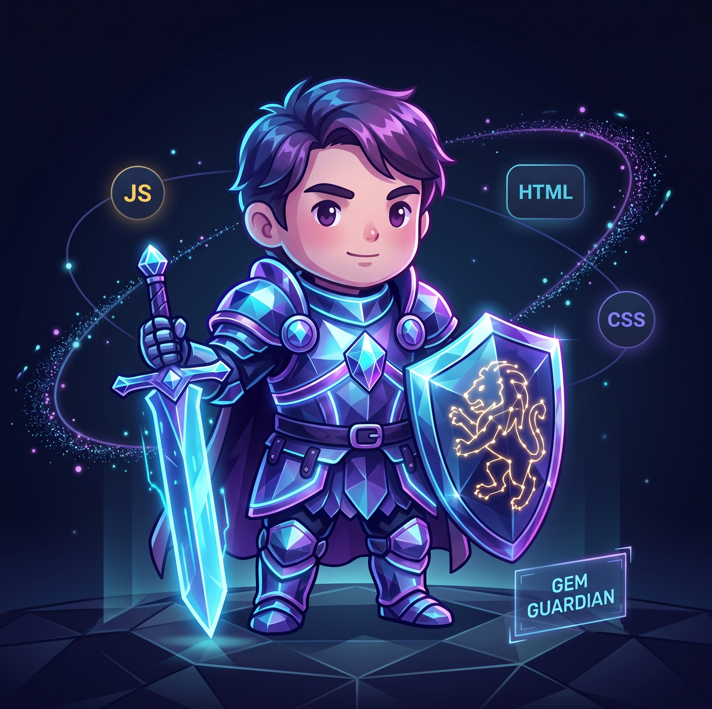
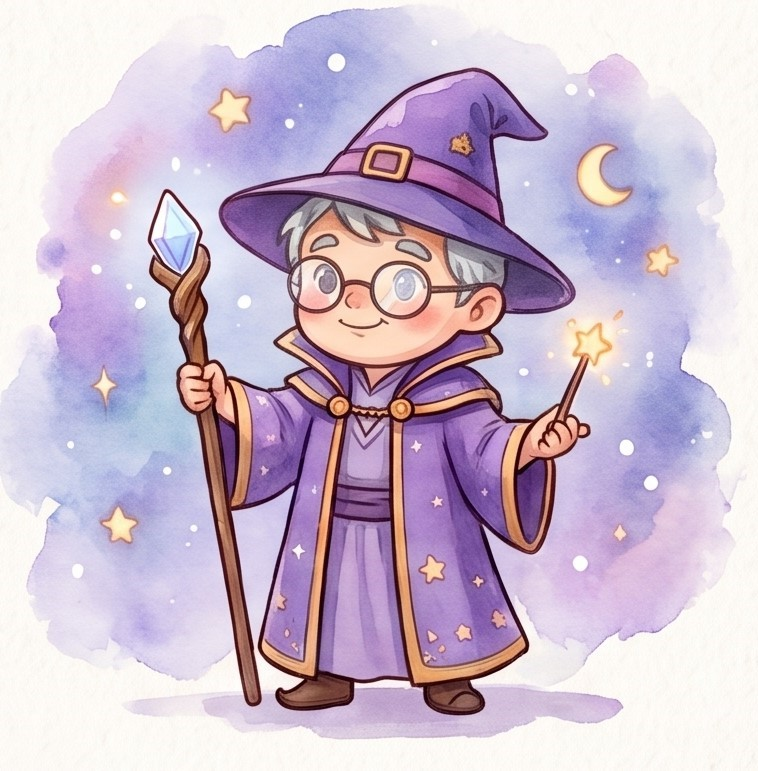
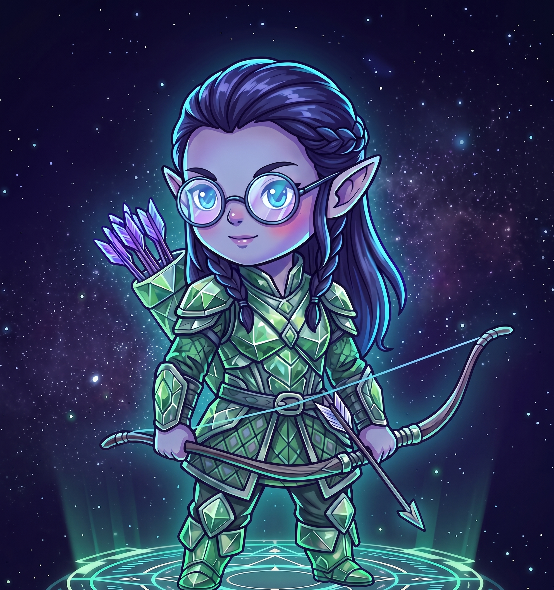
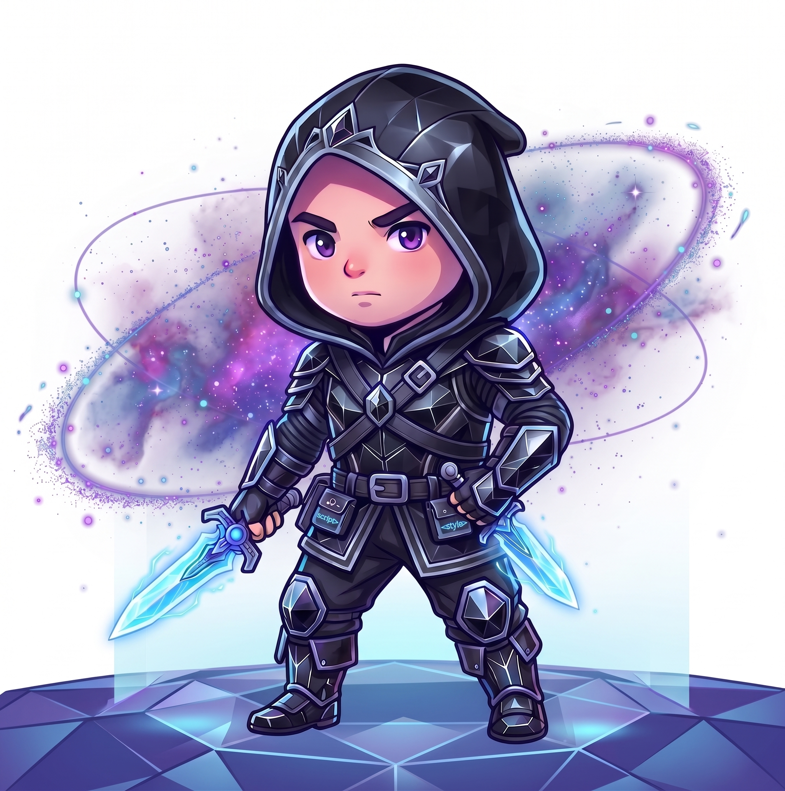

01
Diseño · Código · Curiosidad
Somos AACMP: un equipo que transforma miradas diversas en experiencias web etéreas, humanas y memorables.
01 / Manifiesto
Investigamos, diseñamos, probamos y aprendemos en conjunto. Cada perfil aporta un color propio; el proyecto toma forma cuando esos colores se combinan en armonía pura.
02 / El Equipo



